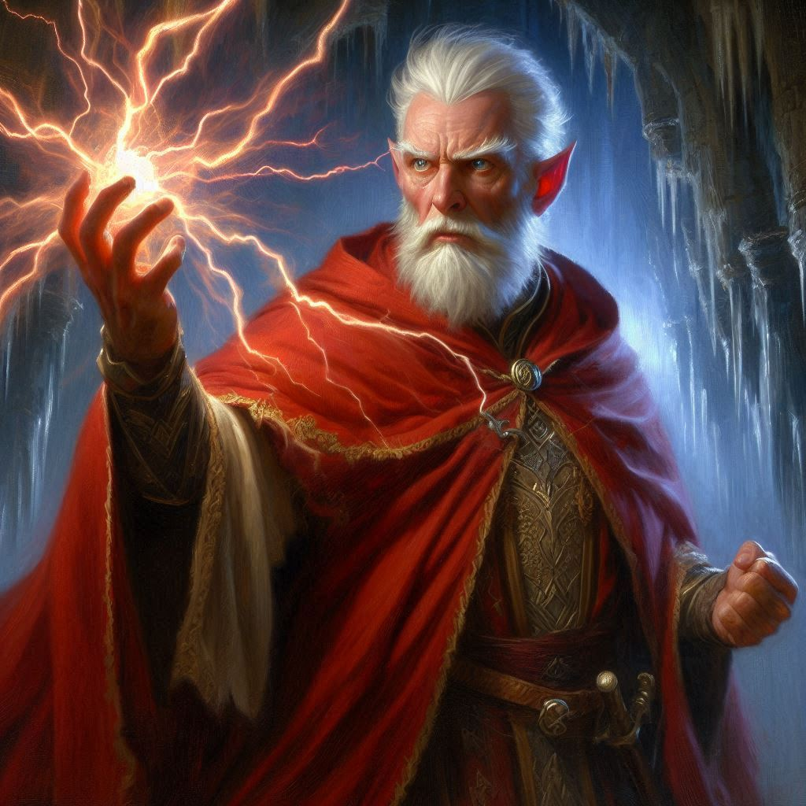
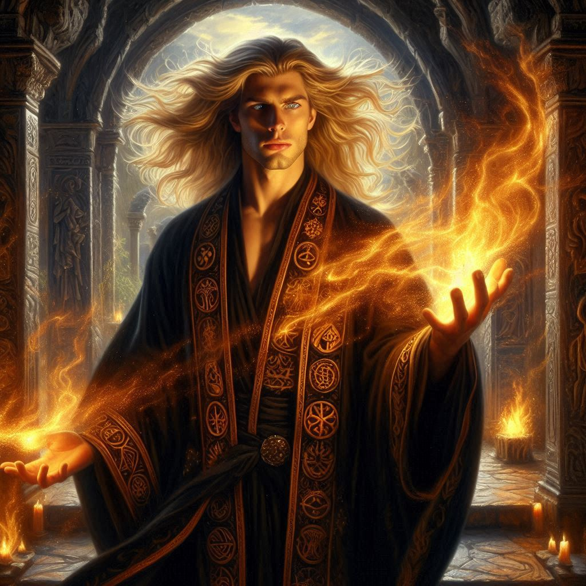
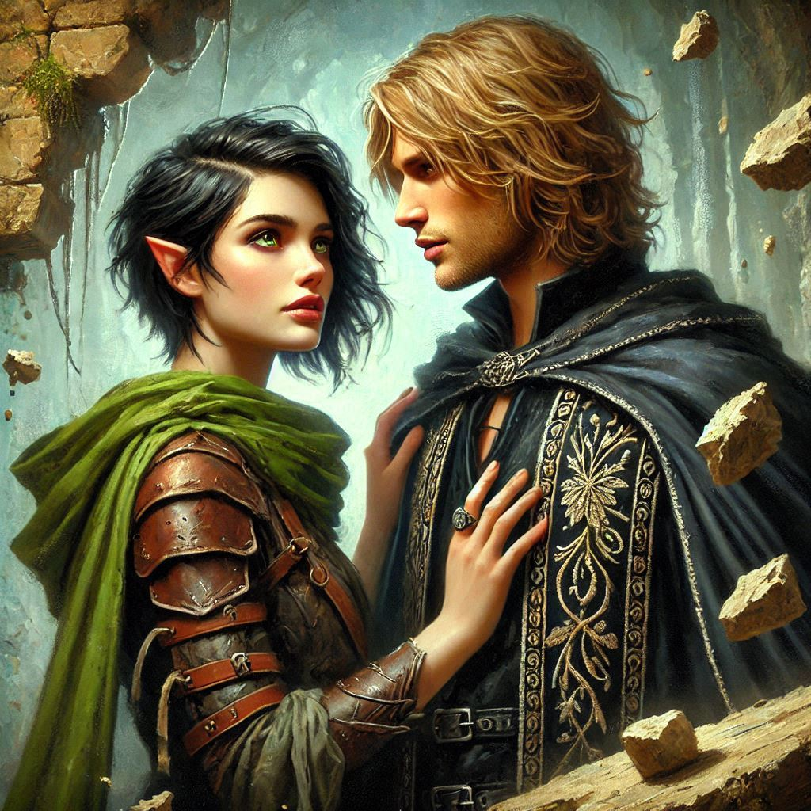
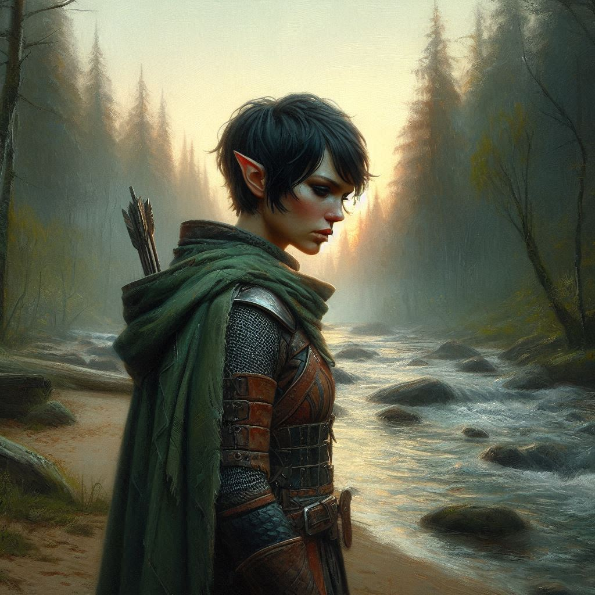
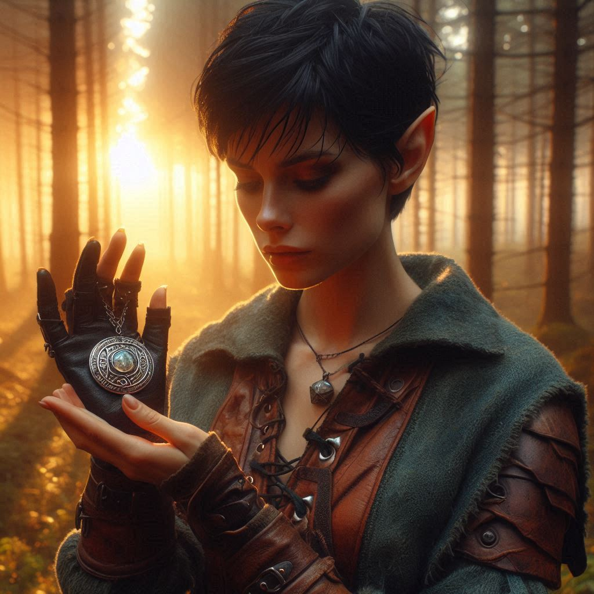

The Amulet
You press your back against the cool stone wall of the cavern, heart pounding in your chest. The shadows around you shimmer with unnatural energy, rising from the swirling portal below like tendrils of smoke. From your perch high on the cavern wall, you grip the hilt of your blade, watching the scene unfold with mounting dread.
Below, Varis stands at the center of a ritual circle carved into the rock, his hands raised skyward. Words in the forbidden tongue of the Shadow Realm spill from his lips. Behind him, the portal churns—an obsidian vortex pulling wind, dust, and light into its depths. Around the circle, two dozen dark elf mercenaries stand ready with their curved blades and obsidian bows.
You glance at Elias beside you. He nods once, fierce resolve burning behind his storm-gray eyes. On your other side, Princess Hawthorn shifts impatiently, her gold-threaded cloak trembling with each breath. She holds a crossbow tight to her chest, her eyes locked on Varis.
You don’t wait for a signal. You don’t need one.
You draw your blade, take a deep breath—and leap.
You descend like a shadow, feet finding footholds worn into the cavern wall. You drop low, silent, creeping through the stalagmites like a panther. The dark magic crackles against your skin. You’re close now. You can hear Varis's voice vibrating through your bones.
You strike.
Steel flashes. Your blade sinks deep into his shoulder.
Varis hisses, his voice twisting into a howl of rage. But before you can pull back, his hand snaps toward you. A surge of dark energy slams into your chest and sends you skidding across the stone floor. Pain sears through you. You try to rise, but your limbs go heavy, bound by shadows.
“No,” you gasp, fighting against the magic. “No!”
From above, a battle cry splits the air.
Elias drops like a comet, swinging his twin swords in a blur of silver. He lands among the mercenaries with the grace of a predator, carving through them with ruthless precision. Hawthorn follows, firing bolt after bolt with royal fury, her voice raised in a battle hymn.
Chaos erupts.
Blades clash. Spells explode. The portal thrashes and grows, casting flickering shadows across the cavern.
You struggle to move, your body still paralyzed by Varis’s curse. He turns his back to you, ready to finish the ritual.
Then the portal screams.
From the darkness within, a figure stumbles forth, wrapped in mist.
Jorsh.
He looks older. Ragged. Changed. But the moment your eyes meet, something deep within you stirs.
“Kira,” he says, his voice strained, but sure. “I’m not your enemy. I’m here to stop him.”
Before you can speak, Jorsh raises his hands—and the cavern shudders. Shadows around Varis recoil as holy fire slams into the dark elf lord. Varis staggers, roaring in fury. The spell binding you weakens. You gasp, regaining control of your limbs.
Jorsh turns to you. “You have to believe me. This ends now.”
But your answer is stolen.
Varis recovers.
His fingers slash the air—and pain sears through you once more. You crumple, helpless again, as the two men you once loved collide in a storm of magic.
Their duel is violent, brutal. Shadow against shadow. Light against dark. The very stone beneath them cracks and burns. Elias cuts down the last of the mercenaries and runs to your side, trying to shield you. Hawthorn reloads, breathing hard, watching with wide eyes.
Then—silence.
Varis falls.
His body disintegrates into black ash.
Jorsh stands over him, chest heaving. He turns to you one last time.
“It’s not over. Not for me.”
He removes the amulet from around his neck—a silver disc etched with ancient runes—and tosses it to you. You catch it instinctively.
“Keep it safe. If you ever want to find me... if you ever want to finish this together... say Vyrathane.”
The word hits you like an echo from your past. The name of the grove you and Jorsh played in as children. A secret place. A sacred word.
Jorsh backs toward the portal. He raises his hands—and the cavern begins to collapse.
“Go!” he shouts.
The walls crack. Stalactites shatter. The portal grows brighter, louder.
Jorsh vanishes into the swirling dark.
The ceiling comes down.
You, Elias, and Hawthorn scramble through the collapsing tunnel. Stones crash around you. Dust chokes the air. Heat and magic thrum in your ears. You run with all your strength, with every last ounce of will.
And then—
Light.
You burst into the open, gasping for air beneath the cloudy sky above Hemlock Falls.
You fall to your knees, clutching the amulet.
Hawthorn straightens her cloak, her face a mask of frustration and dignity.
“Well,” she mutters, brushing stone dust from her shoulders. “The treasure is gone. The sorcerer is lost. But Varis is dead. You've done your kingdom proud, rangers.”
She offers a begrudging smile, turns, and walks back toward the waiting horses.
You remain kneeling, fingers curled around the amulet.
Elias kneels beside you, his voice soft. “Are you okay?”
You nod slowly. Then, after a long moment, you whisper, “Vyrathane.”
The amulet pulses faintly.
You rise to your feet, unsure of what it means—but certain that your story isn’t over yet.
Together, you and Elias begin the long walk back to Belladonna Township. The wind at your back. The future ahead.